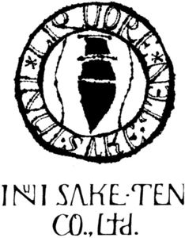

Trade Mark Journal No.2025/011 14 March 2025
WO0000001826292 (33,35)
Office of origin: Japan
Date of International Registration:10 September 2024
Date of designation in the UK:
10 September 2024

International priority date claimed: 25 July 2024
(Japan)
- Class 33
- Sake; Japanese sake [nihonshu]; shochu (spirits); distilled spirits of rice (awamori); western liquors in general; distilled beverages; alcoholic fruit beverages; wine; whisky; vodka; gin; spirits [beverages]; liqueurs; baijiu [Chinese distilled alcoholic beverage]; chinese brewed liquor (laojiou); liquor containing herb extracts; flavored tonic liquors; plum wine; alcoholic beverages, except beer; alcoholic malt beverages, except beers; grain-based distilled alcoholic beverages; rice alcohol; sugarcane-based alcoholic beverages.
- Class 35
- Retail services and wholesale services connected with the sale of alcoholic beverages; retail services and wholesale services connected with the sale of liquor; retail services and wholesale services connected with the sale of beer; retail services and wholesale services connected with the sale of sake; retail services and wholesale services connected with the sale of shochu (spirits); retail services and wholesale services connected with the sale of processed food; retail services and wholesale services connected with the sale of processed seafood products and processed meat products; retail services and wholesale services connected with the sale of seasonings, spices and miso; retail services and wholesale services connected with the sale of fruit juice beverages, fruit juice based seasoning and condiments; retail services and wholesale services connected with the sale of noodles; retail and wholesale services connected with the sale of confectionery; sales promotion for others; provision of an online marketplace for buyers and sellers of goods and services.
INUI SAKE-TEN CO., Ltd.
Representative: IP Firm SHUWA, Holland Hills Mori Tower 14th Floor,, 11-2, Toranomon 5-chome,, Minato-ku, Tokyo 105-0001, JAPAN